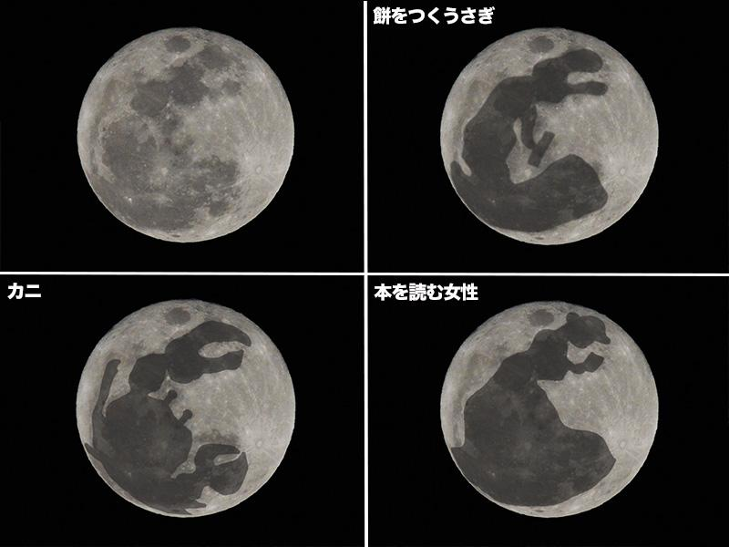
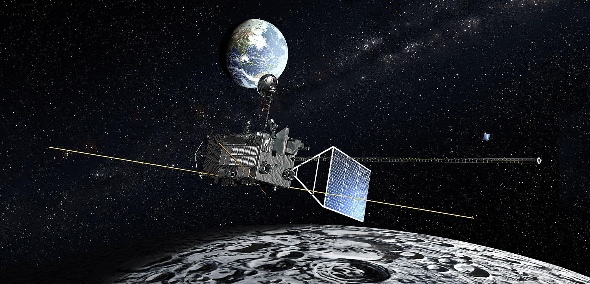

月の特徴
月は地球の衛星。このことから地球の兄弟星とも呼ばれている。空気や水はなく、昼と夜の温度差がはげしい。月は地球より小さいので、もちろん重力も小さく、地球の約6分の1になる。
月の模様でうさぎがオモチをついているように見えますが、世界中ではカニ、本を読む女性、ライオンなどにみ見えている。
月の誕生
月の誕生には様々な説がある。原子惑星系円盤中の塵が集まりかたまって地球とともにできた「兄弟説」、地球の自転が現在よりも速かったころ、赤道部分がちぎれて飛び出した「親子説」、地球の近くにきた天体が、地球の引力につかまり月となった「他人説」、地球ができたころに、他の惑星が衝突し、惑星と地球の破片から月が生まれた「ジャイアントインパクト説（巨大衝突説）」など様々な仮説がある。現在はジャイアントインパクト説が有力である。
月探査計画「かぐや」
日本が2007年9月に打ち上げた月周回衛星「かぐや」は、1960年代後半から70年代前半にかけてアメリカが行ったアポロ計画以来の、最大規模の月の探査計画である。この計画の主な目的は、月の起源と進化の解明のための科学データを取得することと、月周回軌道への投入や軌道姿勢制御技術の実証を行うこと。
「かぐや」は月のまわりを周回しながら15種類の装置を使って月を探査し、月表面の元素組成、鉱物組成、地形、表面付近の地下構造、磁気異常、重力場の観測を全域に行う。これらの観測によって、総合的に月の起源・進化の解明に迫ると期待されており、月の全球地図を作成したり高度データを取得したりしたほか、表と裏で重力場に違いがあることや地下構造に層状構造があること、月の裏側の一部では従来考えられていたよりも最近までマグマ活動があったことなどがわかった。